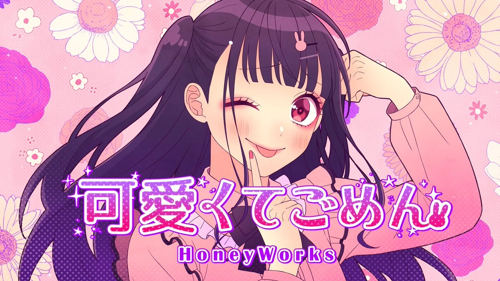

となりのトトロ
となりのトトロ (Tonari No Totoro / My Neighbor Totoro) is a song from Studio Ghibli from the movie; となりのトトロ (Tonari no Totoro / My Neighbor Totoro). Though it may be for children, the director, 宮崎 駿 (Hayao Miyazaki) made it so that all ages can equally enjoy, with the spark of imagination and creativity. Totoro is a completely made-up character with a unique design that's strikingly recognizable, as it is a gentle giant for everyone. This is specifically chosen by my mom, who is a massive Studio Ghibli fan. The music portrays the innocence, peaceful nature, and wild imagination that the movie gives off, perhaps from the perspective of the two young, main protagonists, Mei (younger one) and Satsuki (older one).
可愛くてごめん
可愛くてごめん (Kawaikute Gomen / Sorry I'm So Cute) is a Japanese song by HoneyWorks. Of course, this song is a booming success on YouTube shorts, and you might've heard it somewhere. The lyrics have an extremely girly tone for being "too cute" but at the same time, the lyrics say that they aren't using their cuteness to attract. The lyrics say that the main character, Chuutan, the character, is in her world, enjoying her life as it is without a care in the world. Accepting her flaws even when others criticize her, she moves on and dusts off as she marches on to her hobbies and self-care. She was used to being criticized and she was constantly doubting whether or not she was good enough. After her newfound obsession with her favorite idol group, Lip x Lip, she made herself beautiful and became a character immune to criticism. Being herself her best friend, she strives to be happy, swarmed with her favorite hobbies, and ignoring what others say. Her cute, charming, yet sarcastic lyrics and songs became my dad's favorite songs besides rock songs.